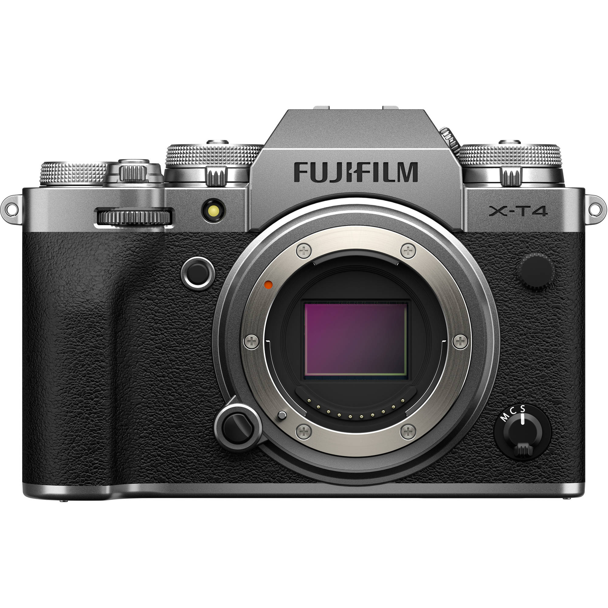

| IMAGES | Description | |
|---|---|---|
|
|
BLACK VERSION FUJIFILM X-T4 is a hybrid camera that uses cutting-edge technology to excel in creating both stills and motion imagery. Free yourself from compromise and be the image maker you’ve always wanted to be. With the fourth-generation X-Trans CMOS 4 sensor, X-Processor 4, a newly developed, compact in-body image stabilization (IBIS) system, the new ETERNA Bleach Bypass Film Simulation mode, and much more, it’s time to extend your creative limits with this incredible imaging tool. Specification:
|
|
|  View Larger Image | SILVER VERSION | |
| OPTIONS | PRICE |
|---|---|
| Amazon (Body Only) | $2,279.99 |
| Amazon (Body+Battery) | $2,392.11 |
| Amazon (with XF16-80mm Lens Kit) | $2,969.00 |
| Link to Amazon | |